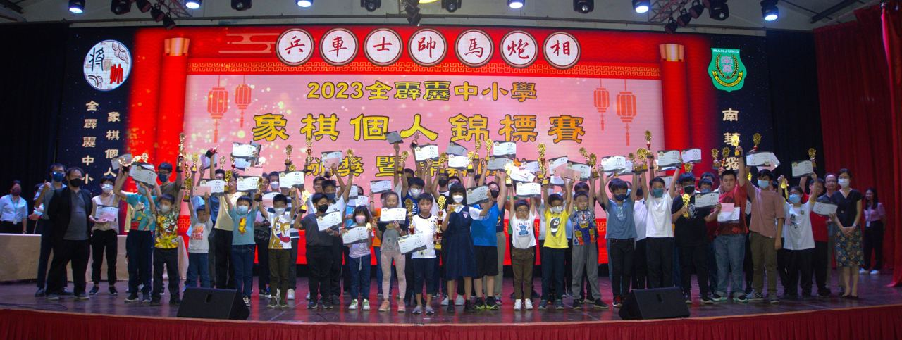
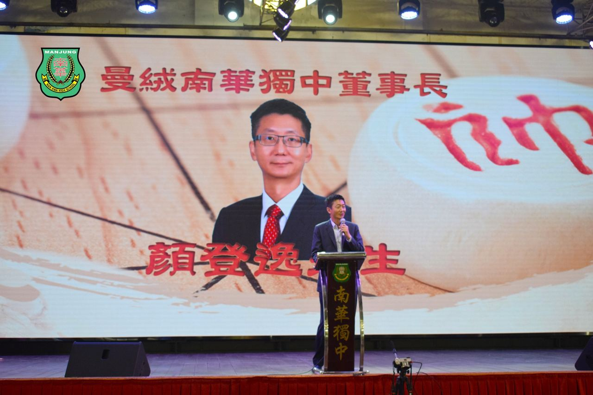
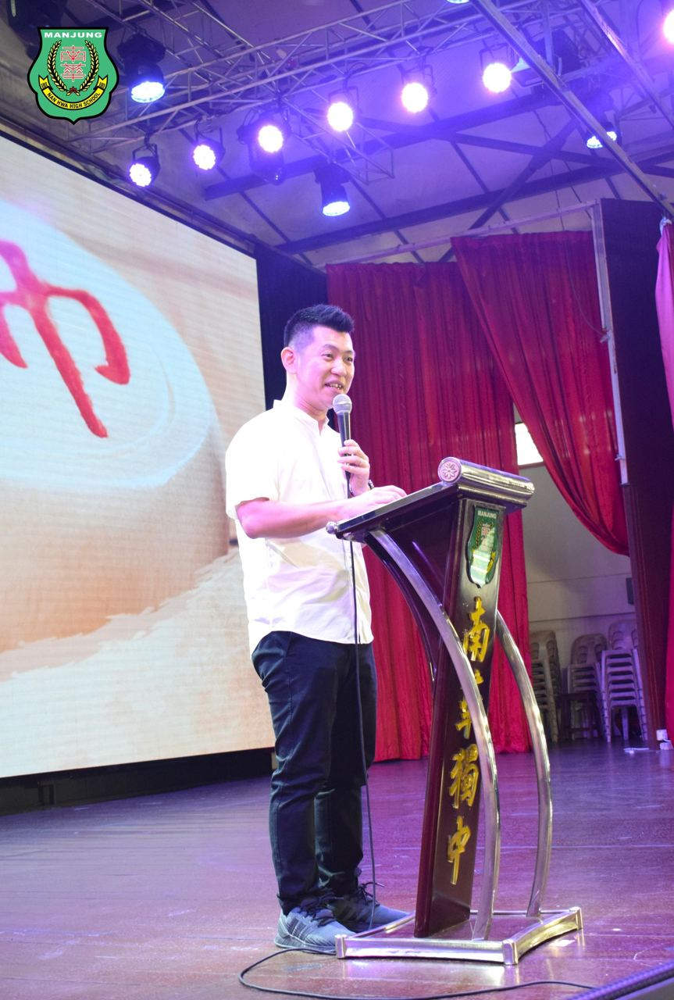
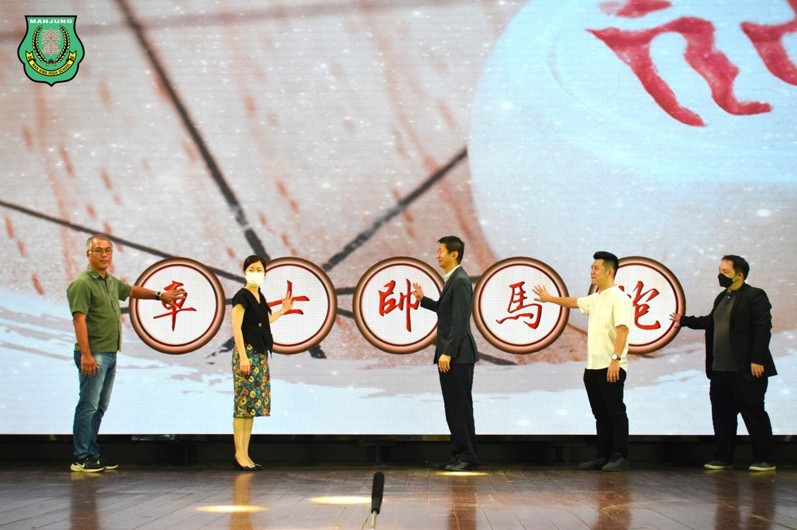
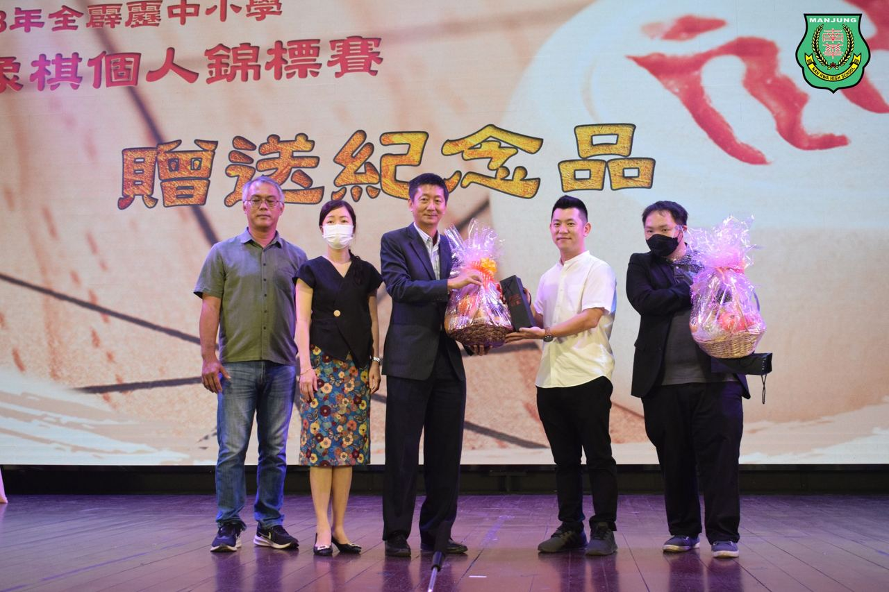
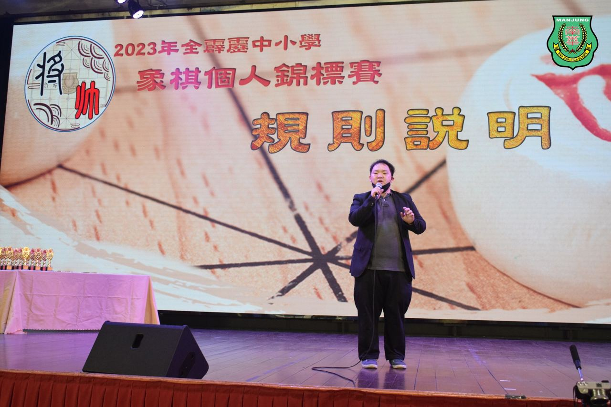
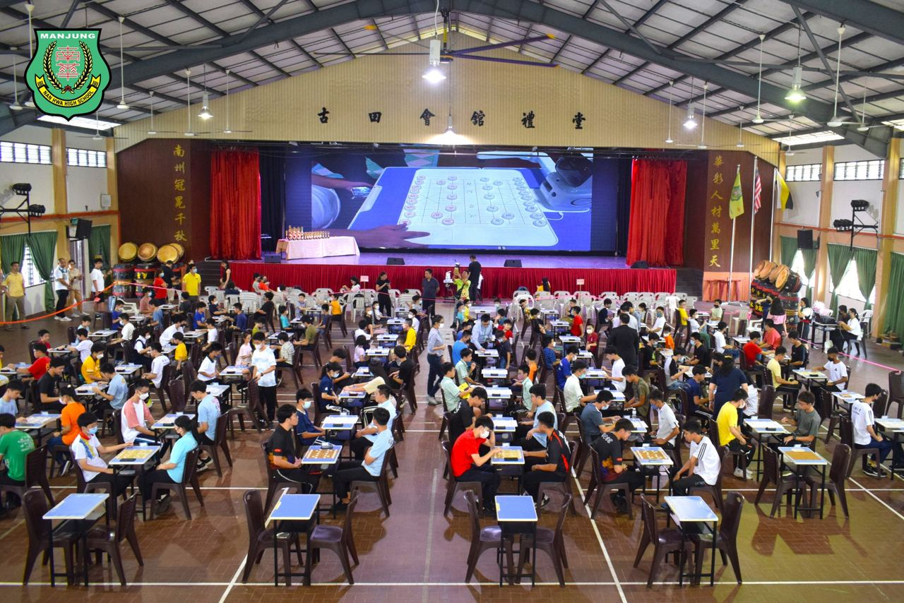
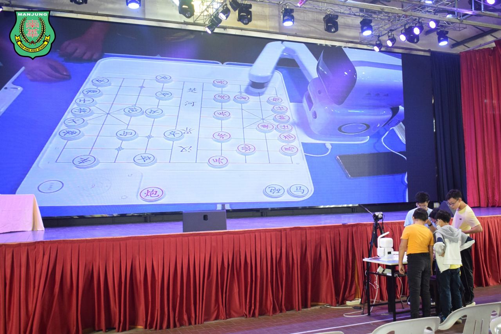

南华独中办象棋个人锦标赛
南华独中办象棋个人锦标赛
124棋手同场竞技争夺棋王荣誉
适逢欢庆马来西亚日，由本校南华独中主办，将领棋院与近打区象棋公会协办的2023年全霹雳中小学象棋个人锦标赛圆满落幕。为了推广象棋运动及发扬中华文化，此象棋赛事成功吸引来自全霹雳共124位棋手齐聚本校礼堂同台竞技，除了争夺12岁以下、15岁以下及18以下组别的名次，最终三组的冠军棋手将透过解残局与对决人工智能机器人，争夺棋王荣誉。
本校董事长颜登逸致辞表示，中国象棋不仅仅是一项棋艺竞技，更是一门富有智慧和深度的中国传统文化。中国象棋博大精深，它远不仅仅是棋盘上的对弈，而是一种复杂的智力游戏，涵盖了战略、策略、计算和决策等多方面的要素。象棋对于学生的教育和发展具有重要意义，更可以锻炼学生宏大局观以及布局，希望学生能够从象棋这门有着中国悠久历史的传统文化中学习到严谨的思路。
阿斯达卡州议员YB黄天荣则表示象棋是一门老少咸宜的游戏，此次锦标赛的成功举办不仅为全霹雳地区的象棋爱好者提供了一个展示棋艺的平台，更重要的是随着时代的进步，今天这场赛事还备有人工智能机器人与棋手切磋棋艺，为参赛选手和观众带来了一场精彩纷呈的赛事。希望在未来，象棋运动能够继续蓬勃发展，为更多的年轻人带来机会，学习和热爱这项充满智慧和乐趣的传统游戏。
主持开幕仪式的有本校董事长颜登逸先生、阿斯达卡区州议员YB黄天荣、董事总务何添胜、董事副总务林道祥、校长陈丽冰博士与近打区象棋公会罗教练。
三组棋手经由运筹帷幄与龙争虎斗后，成绩终于出炉：
棋王：徐佳灏，SJK (C) Sam Chai 三才华小
U12组
冠军：徐佳灏 三才华小
亚军：戴继勇 育才华小
季军：陈伟信 巴占华小
殿军：林卓勤 三才华小
U15组：
冠军：邬洺安 深斋独中,
亚军：钟宇哲 三德国中
季军：王昌泽 三德国中
殿军：林唯俊 天定河华中
U18组：
冠军：梁钧皓 培南独中
亚军：江定轩 三德国中
季军：邓子慷 深斋中学
殿军：丘绎详 金宝培元独中
#全霹雳中小学 #象棋 #个人锦标赛
#南华独中 #曼绒 #实兆远







